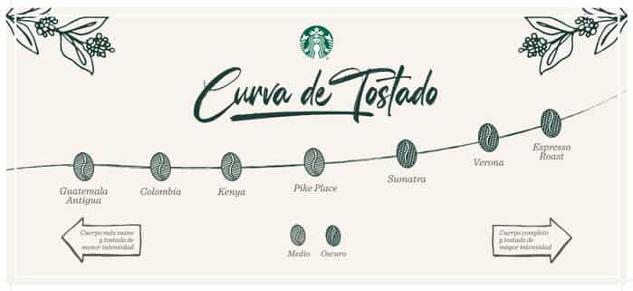
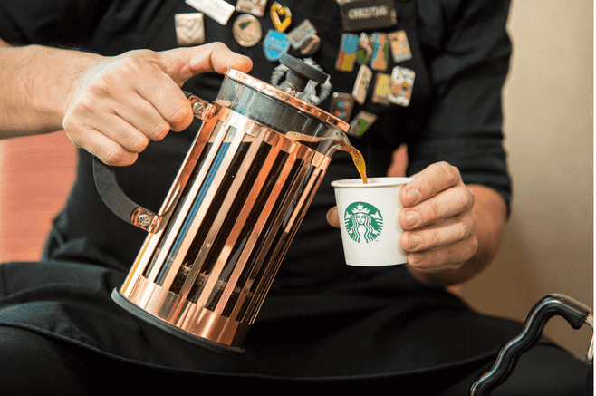

El olor al café, a unos granos recién tostados, es la mejor bienvenida que cada día planificamos para brindarles cuando abrimos las puertas de nuestras tiendas. Pero eso es sólo el comienzo.
De cuerpo entero, un poco ahumado, con notas cítricas, con fuerte presencia de chocolate…el desafío que tenemos constantemente es que cada uno de nuestros clientes encuentre su mezcla favorita y a la vez, que explore nuestras amplias selecciones más singulares.
Para alcanzarlo nos abastecemos de los mejores granos de café arábicos siguiendo siempre estrictos principios éticos.
Para alcanzarlo nos abastecemos de los mejores granos de café arábicos siguiendo siempre estrictos principios éticos.
El café Starbucks tostado rubio es tostado en menos tiempo, tiene un cuerpo ligero y sabores suaves.
El café con tostado medio es balanceado con sabores agradables y enriquecidos.
Los cafés con tostado oscuro presentan un cuerpo completo y sabores fuertes y robustos.
Desde el cultivo responsable hasta el tostado, cada detalle en la elaboración de manera artesanal es fundamental para poder disfrutar de una taza de café Starbucks. Y además de la esencia de los granos, sabemos que la forma en la que se prepara el café tiene un efecto sorprendente en el sabor de cada taza y define su cuerpo.
Es por eso que nuestros magníficos baristas se enfocan en crear diariamente rituales escogiendo diferentes métodos de preparación para que sean nuestros clientes quienes se sorprenden. Así, de la mano de las explicaciones de nuestros expertos, no sólo cultivarán la curiosidad sino que podrán seleccionar el mejor método para su experiencia Starbucks.